1.Связь между нулями функции и промежутками постоянного знака не всегда бывает такой простой, как на приведенном графике (в рассмотренном примере нули функции разделяли промежутки постоянного знака). Функция может обратиться в нуль, но иметь одинаковый знак слева и справа от корня.
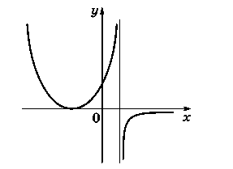
Не всегда верно и обратное — граница двух соседних промежутков постоянного знака не обязательно является корнем функции. Однако в этом случае график функции должен иметь разрыв.
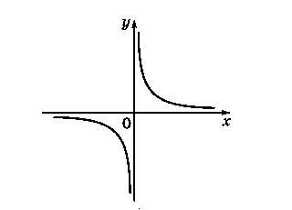
2. Мы применяем термин «монотонность» (возрастание, убывание) только по отношению к промежуткам, целиком входящим в область определения функции.
3. Точка экстремума (максимума, минимума) должна лежать внутри области определения функции (чтобы можно было сравнивать значения функции слева и справа от нее).
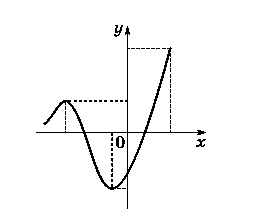
Точка, в которой функция принимает наибольшее (наименьшее) значение, может находиться где угодно.
Как правило, это либо одна из точек экстремума, либо одна из граничных точек области определения.
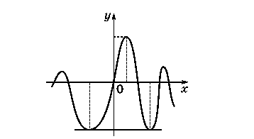
Замечание.Точек экстремума может быть сколько угодно.
Наибольшее (наименьшее) значение функции, если оно существует, всегда единственно, однако оно может приниматься в нескольких различных точках. Когда мы говорим «точка экстремума» или «точка, в которой функция принимает наибольшее значение», то имеем в виду точки, расположенные на оси x, а не точки графика. Наибольшее (наименьшее) значение — это точка, расположенная на оси y.
4. В рассмотренном примере областью значений функции был отрезок [m; M], концы которого — наименьшее и наибольшее значения функции. Так бывает не всегда.
Во-первых, часто у функции нет наибольшего или наименьшего значения.
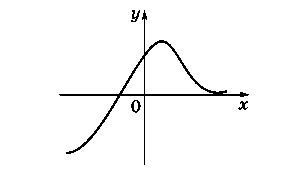
Во-вторых, если функция достигает своих наибольшего и наименьшего значений, но является разрывной, то некоторые промежуточные точки между m и M могут пропускаться, т. е. не входить в область значений функции.
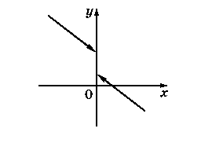
Исследование функций, заданных аналитически, можно свести к исследованию стандартных функций, зная, как меняются свойства при преобразовании функций и операциях над ними.
Преобразования функций будут изучены на отдельном занятии (см. занятие 3), а сейчас повторим основные свойства простейших функций с помощью их графиков.
1.y = 1 — постоянная функция. Ее график — прямая, параллельная оси x.
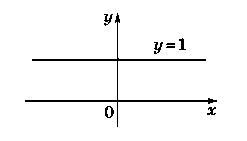
2. y = x — линейная функция. Ее графиком будет биссектриса первого и третьего координатных углов.
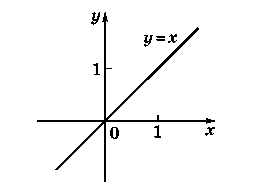
3. у = 1/х —обратно пропорциональная зависимость между значениями функции и значениями аргумента
4.у = х^2— квадратичная функция. Ее графиком будет парабола с вершиной в начале координат, симметричная относительно оси y
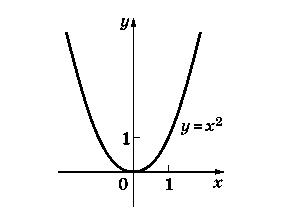
5.у = х^1/2— степенная функция. Ее график — ветвь параболы
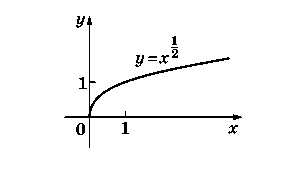
6.у = 2^х; у = log2x — показательная и логарифмическая функции. Они взаимно-обратны.
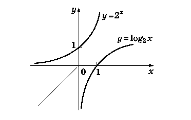
7.y =sin x; y =cos x — основные тригонометрические функции. Их графики — синусоиды, различающиеся на π/2.
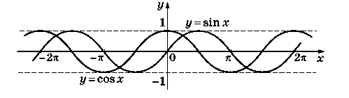
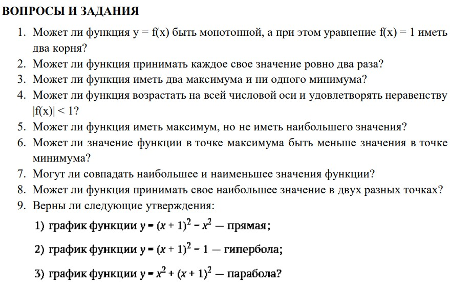